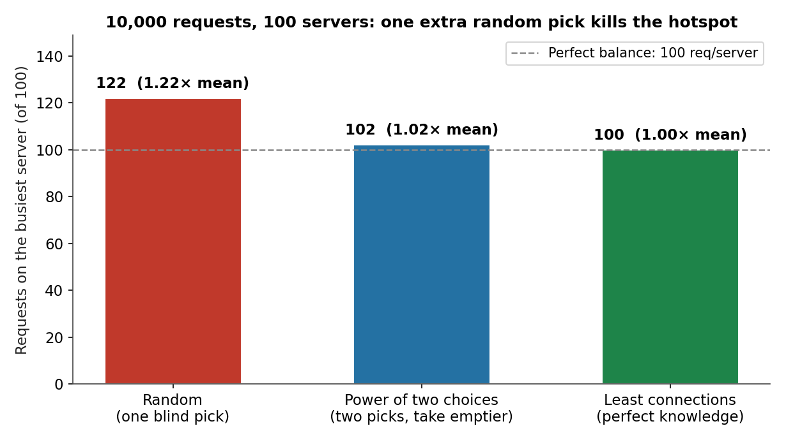
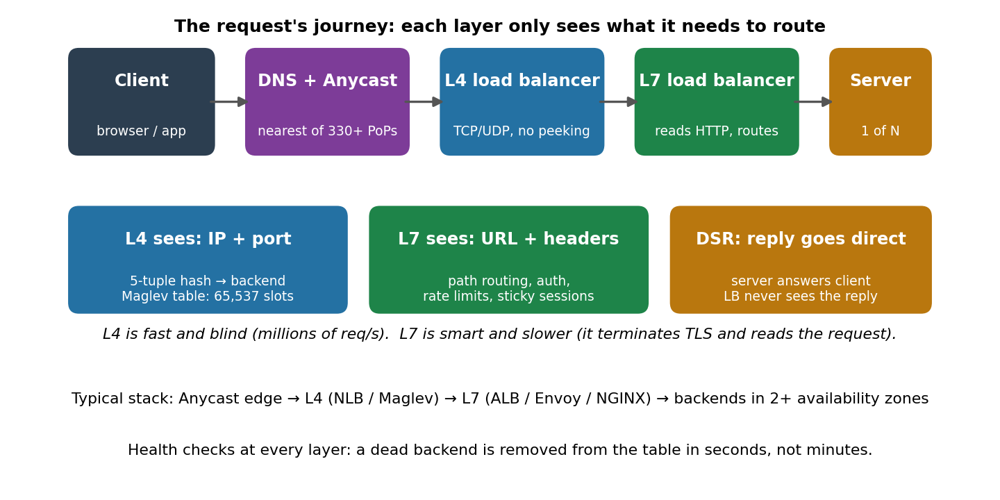
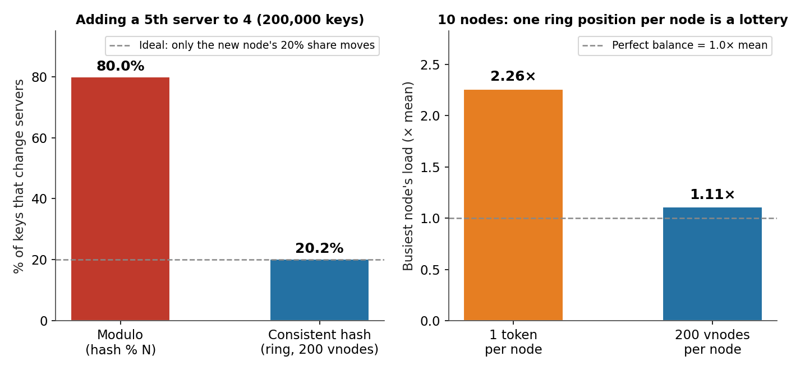
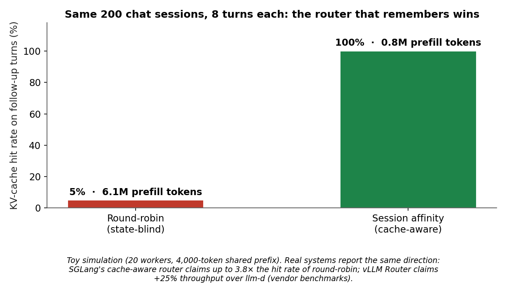

One DNS name. Fifty-seven million requests a second. That is the average load Cloudflare's network absorbs — 77 million at peak, across 330+ cities, with 405 Tbps of capacity behind it. No single server on earth handles that. No single data center does either. What handles it is the most invisible piece of infrastructure in system design: the load balancer, a machine whose entire job is to decide, in microseconds, which of a thousand identical servers gets your request — and to keep deciding correctly when servers die, traffic spikes 10x in a minute, and one unlucky key gets hot.
This is Part 1 of System Design, Plainly: one concept per post, evergreen, beginner-friendly, with the concrete numbers and the failure modes. Today: load balancing — what it is, the four algorithms that matter, why the naive version breaks, and why in 2026 the load balancer is suddenly part of the AI inference engine.
The ELI5 version
Imagine a food court with 100 identical burger counters and one entrance. A host stands at the door. Every customer who walks in, the host points at a counter.
The laziest host points at counters in order — 1, 2, 3, … 100, then back to 1. That is round robin, and it works fine until one customer orders a 40-burger catering tray and blocks counter 7 for twenty minutes while the other 99 counters stand idle. The host kept dealing fairly; the work was not fair.
A smarter host glances at each counter's line and sends you to the shortest one. That is least connections, and it is nearly perfect — but now the host has to look at all 100 lines for every single customer, which is itself slow when 57 million customers show up per second.
The clever host does something cheaper: pick two counters at random, glance at just those two lines, and send you to the shorter one. That is the power of two choices, and the math says it is almost as good as checking all 100. One extra random glance buys nearly everything perfect knowledge would.
Load balancing is that host, automated, at a scale where "glance" means a hash-table lookup in under 100 nanoseconds — and where the counters are servers that crash, get deployed, and come back with different speeds.

How it works: layers, then algorithms
A request crosses up to three load-balancing layers before it reaches your code, and each layer only sees what it needs to route.
DNS + Anycast is the first, coarsest layer. One IP address is announced from hundreds of data centers at once (BGP Anycast); internet routers send you to the nearest one automatically. If a whole data center goes dark, BGP reroutes you to the next-nearest in seconds — no config change, no DNS TTL wait. This is also how a 71-million-requests-per-second DDoS attack gets absorbed: the attack is spread across the whole footprint instead of landing on one target.
Layer 4 (transport layer) sees only IP addresses and ports. It never opens the packet's contents, never terminates TLS. It hashes the connection's 5-tuple (source IP, source port, destination IP, destination port, protocol) and looks up a table to pick a backend. Because it is so dumb, it is fast: AWS's Network Load Balancer handles millions of requests per second at sub-millisecond latency, and Google's Maglev — the software load balancer behind Google Cloud — processes roughly a gigabit per second per core with a precomputed lookup table of 65,537 entries.
Layer 7 (application layer) terminates TLS, reads the HTTP request, and routes on the URL, headers, and cookies: /api/* to one fleet, /images/* to another, this user's session to the server that already holds it. It is smarter and slower — it has to do real work per request — so the typical production stack is L4 in front of L7 in front of backends, in two or more availability zones.

The algorithm ladder
Four algorithms cover nearly every real system, and they form a ladder: each one fixes the failure of the one below it.
- Round robin — deal requests in order. Free, stateless, and blind. It breaks the moment requests cost different amounts: one slow request queues behind nothing while another server idles. Use it only when every request costs about the same.
- Least connections — send to the server with the fewest in-flight requests. Near-perfect balance, but it costs a full scan of the fleet per request, and the "fewest" number is stale the instant you read it at high concurrency.
- Power of two choices — pick two servers at random, send to the emptier one. The theorem (Mitzenmacher, 1996/2001) is the prettiest result in the field: with n balls into n bins, blind random assignment leaves the busiest bin at ~log n / log log n balls, while two choices leaves it at log log n + O(1). At a million bins that is ~5.3 versus ~2.6. Our simulation (companion notebook) makes it concrete: 1,000 balls into 1,000 bins, random leaves the busiest bin with 5, two choices leaves it with 3, perfect knowledge gets 1 — and at 10,000 requests over 100 servers, two choices lands at 102 versus random's 122 and perfect's 100. Two random peeks buy 90% of omniscience. This is why NGINX, HAProxy, and Envoy all ship it.
- Consistent hashing — for stateful work. Sometimes the request has to land on the same server as last time: a cache key, a user session, a shard. Hashing the key modulo N is the obvious answer and the wrong one: add a 5th server and 80% of your keys move, because every key's
hash % 5differs from itshash % 4. Consistent hashing (Karger et al., 1997; popularized by Amazon's Dynamo, 2007) puts servers and keys on the same ring; a key belongs to the next server clockwise. Add a server and only the keys in its arc move — about the new server's fair share, 20%. Our simulation: 200,000 keys, 4 → 5 servers, modulo moved 80.0%, the ring moved 20.2%.

One catch with rings: a single position per server is a lottery. The largest arc on a 10-node ring runs about 2.9× the fair share in expectation, so one server can inherit nearly triple the keys. Our simulation measured the busiest node at 2.26× the mean with one token per node — and 0.06× for the quietest, which is nearly idle. The fix is virtual nodes: give each server 200 positions on the ring instead of one, and the spread collapses to 1.11× busiest, 0.83× quietest. Cassandra 4.0 defaults to 16 tokens per node plus deliberate placement; the principle is the same either way.
The two tricks that make it fast
Direct Server Return (DSR). The load balancer only handles the incoming packet. The server replies directly to the client, skipping the balancer. That halves the balancer's work and removes it from the latency path of every response — it is why L4 balancers can run at line rate.
Health checks, at every layer. A balancer that routes to a dead server is worse than no balancer. Every layer probes its backends — a TCP connect, an HTTP 200 on /healthz — and a failed backend is dropped from the table in seconds. Maglev rebuilds its lookup table in milliseconds when a backend dies, so only the connections that belonged to the dead machine are re-hashed; the rest are untouched.
The state of the art: what changed in 2025–2026
Three shifts, in order of importance.
1. The cloud balancers keep getting smarter about the same old job. AWS's 2025–26 updates are all about control: NLB gained QUIC passthrough and weighted target groups in November 2025, ALB gained a Target Optimizer that caps concurrent requests per target to keep tail latency down. Pricing is still metered per capacity unit (about $0.0225/hour plus $0.008 per LCU-hour for ALB) — which is why the "just add more balancers" instinct has a bill attached.
2. The research frontier is still the ring. Consistent hashing is 29 years old and still getting papers. The August 2026 Local Rendezvous Hashing paper cuts the peak-to-average load ratio from 1.28 to 1.09 across 5,000 nodes and 50 million keys, with zero excess churn on failover — by running the election among a small window of ring-local neighbors instead of probing scattered memory. The lesson for interviews: consistent hashing is not a solved problem, it is a live tradeoff between balance, churn, and lookup cost.
3. The load balancer became part of the AI inference engine. This is the genuinely new part. An LLM request is stateful: the first turn of a chat builds a KV cache — thousands of tokens of prefill compute — and every follow-up turn reuses it only if it lands on the same worker. A round-robin balancer sends turn 6 to a random worker, the cache misses, and you pay the full prefill again. So the inference world built its own balancers: SGLang's cache-aware router scores each worker by prefix-match length and queue depth, claiming up to 3.8× the cache-hit rate of round-robin; the vLLM Router (Rust, December 2025) routes by session and understands prefill/decode disaggregation, reporting 25% higher throughput than llm-d and 2× over Kubernetes' native balancer in its own benchmark. Our toy simulation shows the same shape: 200 eight-turn sessions over 20 workers, round-robin hits the cache 5% of the time and burns 6.12M prefill tokens; session affinity hits 100% and burns 0.80M — 7.7× less recompute. And a June 2026 paper, RouteBalance, goes one step further and fuses model selection with instance selection in a single decision, Pareto-dominating 231 of 246 baseline configurations and cutting serving cost 26–37%. The load balancer is no longer just plumbing; for LLM serving it is a scheduling decision that costs real GPU money.

Why it breaks
Every load-balancing outage I have read about is one of these six:
- The hot key. Consistent hashing is fair on average and useless against skew: if one celebrity's profile gets 40% of reads, one server gets 40% of reads. The fix is bounded loads (cap each node at (1+ε)× the average and spill the overflow clockwise) or splitting the hot key — never "add more servers," which does nothing for a single key.
- Slow start. A fresh server joins the pool, the balancer floods it at full rate, and it melts before its caches warm. Good balancers ramp new backends up over tens of seconds. AWS's Target Optimizer exists partly for this.
- Sticky sessions that stick too well. Session affinity is a cache optimization until a server dies and every one of its sessions re-homes at once — a thundering herd onto the survivors. Cap affinity lifetime; prefer consistent hashing over cookie pinning.
- Health checks that lie. A backend that returns 200 on
/healthzwhile its database connection pool is exhausted will receive traffic it cannot serve. Probe the thing that matters (a real query), and fail closed. - Retry storms. A client that retries a timed-out request 3× turns one outage into 4× load on the survivors — which then time out, which triggers more retries. This is the cascade that takes down whole fleets; the fixes are timeouts, backoff with jitter, and circuit breakers, all above the balancer.
- Cross-zone traffic. Balancers that ignore zones will happily send a request across the continent to a slightly emptier server, paying latency and egress for a balance gain nobody measures. Keep traffic local unless a zone is actually failing.
The interview angle
"Design a load balancer" is a top-10 system-design question, and the expected answer is a tour of exactly this post: DNS/Anycast → L4 → L7, the algorithm ladder with the power-of-two-choices theorem, consistent hashing with virtual nodes for stateful routing, health checks, and DSR. The follow-ups that separate good answers from great ones: how do you handle a hot key? (bounded loads), what happens when a backend dies mid-request? (retry once, elsewhere, with an idempotency key), how do you add capacity without moving 80% of the keys? (the ring), and what does your balancer do that a plain DNS round robin cannot? (health checks and state).
In the real world, the decision is usually not which algorithm to write — it is which layer to buy. One static IP per AZ and millions of requests per second is a Network Load Balancer; path-based routing and TLS termination is an Application Load Balancer or Envoy; global failover and DDoS absorption is Anycast at the edge. You write a custom balancer only when the routing decision needs application state — which, as the LLM world just discovered, is exactly when the interesting work starts.
Takeaways
- Load balancing is three layers, not one: DNS/Anycast picks the region, L4 picks a machine without reading the packet, L7 routes on the URL. Each layer only sees what it needs.
- Power of two choices is the best deal in distributed systems: one extra random peek takes you from 122 to 102 requests on the busiest server (perfect: 100), and the theorem says the gap grows with scale.
- Consistent hashing exists because modulo is a trap: adding a 5th server moves 80% of keys under modulo, ~20% on a ring — and virtual nodes (200 per server) tame the ring's own imbalance from 2.26× to 1.11×.
- Direct Server Return and health checks are what make balancers fast and safe: the reply skips the balancer, and dead backends leave the table in seconds.
- The 2026 twist: for LLM serving, the load balancer is a cache decision. Round-robin re-pays the prefill bill (6.12M tokens in our toy); session affinity pays it once (0.80M). SGLang and vLLM now ship their own routers.
- It breaks on skew, not on averages: hot keys, slow starts, lying health checks, and retry storms — not raw throughput — are what take balancers down.
- Try it yourself. The companion notebook replays all four simulations: the ladder (random 5 vs P2C 3 vs perfect 1 at m = n = 1,000), the 80%-vs-20% scale-out, the vnode collapse, and the 7.7× prefill saving.
This is Part 1 of System Design, Plainly. Part 2 — Caching — is next. Follow me on dev.to (@danielsamfdo) so you don't miss it.
Sources: Karger et al., "Consistent Hashing and Random Trees" (1997); Amazon Dynamo (2007); Eisenbud et al., "Maglev: A Fast and Reliable Software Network Load Balancer" (NSDI 2016); Mitzenmacher, "The Power of Two Choices in Randomized Load Balancing" (2001); AWS Elastic Load Balancing docs (NLB: millions of requests/second; 2025–26 feature updates); Cloudflare security architecture (57M HTTP req/s average, 77M peak, June 2024 figures; 71M req/s DDoS attack mitigated); SGLang / vLLM Router blogs (cache-aware routing claims are the vendors' own benchmarks, not independently replicated); RouteBalance (arXiv 2606.17949, June 2026); Local Rendezvous Hashing (arXiv 2512.23434, August 2026). All simulation numbers are from the companion notebook and the diagrams in this post; toy diagrams are labelled illustrations. No content about excluded vendors appears in this post.